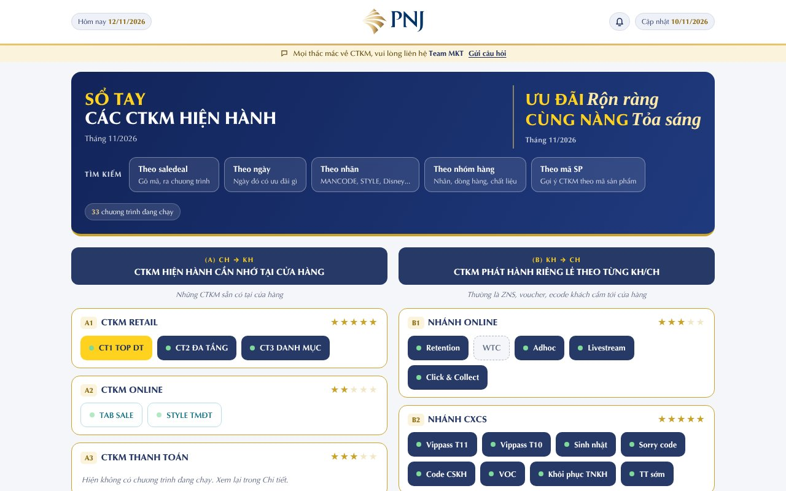

TÀI LIỆU HƯỚNG DẪN · THÁNG 11/2026
Sổ Tay CTKM
Hướng dẫn sử dụng cho Tư vấn viên và Cửa hàng trưởng: cách xem, cách tra cứu, cách làm bài test và những lưu ý quan trọng.
Tìm CTKM theo saledeal, ngày, nhãn, nhóm hàng hoặc mã sản phẩm ngay tại quầy.
Mỗi nhóm CTKM có tóm tắt, chi tiết, ảnh TBTK gốc và bài test kiểm tra kiến thức.
Gửi câu hỏi về CTKM cho Team MKT, xem câu trả lời được ghim cho toàn hệ thống.
Truy cập đường link nội bộ do Team MKT gửi: mktpnjhcm.github.io/so-tay-ctkm. Dùng được trên điện thoại và máy tính, không cần đăng nhập.
IPHONE (SAFARI)
Mở link bằng Safari.
Bấm nút Chia sẻ (ô vuông có mũi tên lên).
Chọn "Thêm vào MH chính", đặt tên Sổ Tay CTKM, bấm Thêm.
ANDROID (CHROME)
Mở link bằng Chrome.
Bấm dấu ba chấm ở góc trên bên phải.
Chọn "Thêm vào màn hình chính", bấm Thêm.
| 1 | Bìa, cách mở và cài sổ tay | 4 | Tìm kiếm 5 cách |
| 2 | Trang chủ | 5 | Bài test, đánh giá sao, Q&A |
| 3 | Trang nhóm CTKM | 6 | Lưu ý và cảnh báo |
PHẦN 2
Mở sổ tay là vào trang chủ. Đây là nơi xem nhanh toàn bộ CTKM đang chạy trong ngày.
Logo và nút Hôm nay
Bấm logo để về trang chủ. Ngày hôm nay dùng để tính chương trình đang chạy.
Chuông thông báo
Số đỏ là thông báo CTKM chưa đọc. Bấm để xem danh sách cập nhật.
Thanh Team MKT
Có mặt ở mọi trang. Bấm "Gửi câu hỏi" để hỏi trực tiếp về CTKM.
Ô tìm kiếm
Gõ saledeal, tên chương trình, nhãn hoặc mã sản phẩm.
Nút tắt tìm kiếm
Saledeal, Theo ngày, Nhãn, Nhóm hàng, Mã SP (xem trang 4).
Thống kê
Số chương trình Đang chạy, Sắp hết (còn 7 ngày) và Sắp chạy.
Tagline tháng
Thông điệp chính của CTKM trong tháng, dùng khi tư vấn.
Danh sách nhóm
Mỗi nhóm có số sao (mức cần nhớ) và các nút chương trình. Bấm để mở.
Thanh điều hướng
Chuyển nhanh giữa Trang chủ, Tìm kiếm, Tóm tắt, Bài test và Q&A.
Chương trình đã kết thúc tự ẩn khỏi trang chủ. Trong trang chi tiết, chương trình hết hạn được làm mờ màu xám để không tư vấn nhầm.
Số sao là mức Tư vấn viên cần tập trung nhớ: 5 sao là rất cần nhớ.
PHẦN 2 (TIẾP)
Trên máy tính, trang chủ hiển thị rộng hơn: khối A và khối B nằm cạnh nhau, các nút tìm kiếm nằm ngay trong khung tiêu đề.

123456789101112Hôm nay
Ngày đang xem, dùng để tính chương trình đang chạy.
Logo PNJ
Bấm để quay về trang chủ từ bất kỳ trang nào.
Chuông thông báo
Xem các thông báo cập nhật CTKM, số đỏ là chưa đọc.
Ngày cập nhật
Ngày dữ liệu sổ tay được cập nhật gần nhất.
Thanh Team MKT
Bấm Gửi câu hỏi để hỏi về CTKM.
Tagline tháng
Thông điệp chính của CTKM trong tháng.
5 nút tìm kiếm
Theo saledeal, ngày, nhãn, nhóm hàng, mã SP.
Số chương trình đang chạy
Tổng số CTKM còn hiệu lực trong ngày.
Khối A
CTKM hiện hành cần nhớ tại cửa hàng (A1, A2, A3).
Khối B
CTKM phát hành riêng lẻ theo từng khách hàng (B1 đến B4).
Số sao
Mức Tư vấn viên cần tập trung nhớ.
Nút chương trình
Bấm để mở chi tiết. Nút có chấm xanh là đang chạy.
PHẦN 3
CTKM được chia thành 2 khối. Mỗi nhóm có nhánh con (ví dụ A1.1, A1.2) để xem từng chương trình.
KHỐI A · CTKM CHÍNH
| A1 | CTKM Retail |
| A2 | CTKM Online |
| A3 | CTKM Thanh toán |
KHỐI B · CÁC NHÁNH
| B1 | Nhánh Online |
| B2 | Nhánh CXCS (VIP Pass, sinh nhật, CSKH...) |
| B3 | Nhánh Partnership (đối tác) |
| B4 | CT chi nhánh |
Dùng ô chọn nhóm ở đầu trang. Khi đang ở một nhóm, ô chọn hiện thêm các nhánh con, chọn nhánh nào sẽ cuộn thẳng tới nhánh đó.
TAB 1
TAB 2
TAB 3
TAB 4
Bấm vào tên chương trình để mở bảng tóm tắt: văn bản, sale deal, ưu đãi chính, điều kiện và lưu ý không đồng thời.
Trong Xem nhanh, bấm nút này để xem ảnh Thông báo triển khai gốc. Lần đầu có thể chờ 1 đến 3 giây để tải ảnh.
PHẦN 4
Vào bằng ô tìm kiếm ở trang chủ, nút tắt bên dưới, hoặc nút Tìm kiếm ở thanh điều hướng.
| Cách tìm | Nhập gì | Dùng khi |
|---|---|---|
| Saledeal | Gõ mã saledeal (chỉ cần vài số cuối) hoặc tên chương trình. | Khách đưa hóa đơn hoặc phiếu có mã, cần biết là chương trình gì. |
| Theo ngày | Chọn một ngày, xem các chương trình chạy trong ngày đó. | Khách hẹn quay lại ngày khác, cần biết ưu đãi còn không. |
| Nhãn | Chọn nhãn hàng, dòng hàng, chất liệu. | Khách quan tâm một nhãn cụ thể (STYLE, ARTA, Disney...). |
| Nhóm hàng | Nhập khóa Material Group, ví dụ PGPC0ACV0 hoặc PGPC. | Tra theo nhóm hàng trên hệ thống. |
| Mã SP | Nhập mã sản phẩm: 13 ký tự trang sức, 16 ký tự đồng hồ, hoặc mã quà tặng. | Đang cầm sản phẩm, cần biết áp dụng CTKM nào. |
Tìm kiếm giúp khoanh vùng nhanh, không thay thế TBTK. Khi không chắc, mở Xem đầy đủ TBTK hoặc hỏi Team MKT qua Q&A.
Có mã sản phẩm: dùng Mã SP.
Có phiếu, mã e-code, saledeal: dùng Saledeal.
Khách hỏi ưu đãi vào ngày khác: dùng Theo ngày.
PHẦN 5
Vào nhóm CTKM, chọn tab Bài test (hoặc nút Bài test ở thanh dưới, hoặc nút LÀM BÀI TEST trong thông báo).
Chọn bài test của chương trình cần ôn.
Nhập Mã nhân viên và các thông tin được hỏi. Mã nhân viên viết hoa hay thường đều được tính là một người.
Trả lời từng câu. Sau khi nộp, xem điểm, kết quả Đạt hoặc Chưa đạt và giải thích từng câu.
Kết quả tự gửi về Google Sheet cho Team MKT theo dõi. Không giới hạn số lần làm bài.
| Đã ghi kết quả vào Google Sheets | Đã gửi thành công. |
| Chưa gửi được, sẽ tự gửi lại khi có mạng | Bài đang được giữ trong máy. Không cần nộp lại, lần sau mở sổ tay có mạng là bài tự gửi. |
PHẦN 6
Sổ tay tóm tắt để tra nhanh và học. Khi thông tin trên sổ tay khác TBTK, làm theo TBTK và báo Team MKT.
Mọi thắc mắc về CTKM, gửi câu hỏi trong mục Q&A hoặc liên hệ Team MKT PNJ Chi nhánh HCM.